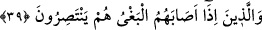

Ey kerâmet sahibi, selâmetin şükrü olarak
Bir gün de bu çâresiz dervişin hâlini hatırını sor.”
Mürîdin şeyhlerin hırka ve kaftanını giymesi uygun düşmez. Ancak bir müddet bir
liyâkat elde ederse olabilir. Hırka, dünyadan soyutlanan zâhid ve sûfilerin şânıdır.
Câmi şöyle der:
Onun vuslatını şah atlasta arama,
Aşkın dokuduğu bu elbise yama altındaki bir tende gizlidir.
İşin başlaması ve bitişi Allah’tandır. İyi bilinki bütün işler sonunda Allah’a varır.
Allah daha iyi ve bâkîdir.
Ey Hâfız kendi hevesine doğru bu kaçıncı gidiştir,
Ey beni arzulayan kimse, Allah senin yolunu kolaylaştırsın.
Ey tâlip olan, Allah yolunu kolay etsin!
39. Bir haksızlığa uğradıkları zaman yardımlaşırlar.
“Bir haksızlığa uğradıkları zaman yardımlaşırlar.” Kendilerine yapılan haksızlığa
denk bir muâmele ile kısas uygulayıp zâlimlerden intikamlarını alırlar ve haddi
aşmazlar.
Bu ifâde kendinden bir önceki mevsûle mâtuftur. “İsâbet etmek”, ulaşmak ve yetişmek
demektir. “Bağy”, zulüm ve haddi aşmaktır. “İntisar” ise yardım istemek demektir.
Tâcü’l-masâdir’de bu kelimenin, yardım etmek, intikam almak, birisinin hakkını gasp
edenden alarak kendisine vermek gibi mânâlara geldiği belirtilir. Mânâ şöyledir: Haddi
aşan bir zâlim tarafından bunlara bir zulüm ve haksızlık ulaştığı zaman bunlar
kendilerine yapılan haksızlığa denk bir muameleyle zâlimlerden intikam alırlar, fakat
haddi aşmazlar. Zaten bu, Allah’ın onlara tanıdığı bir hak ve ruhsattır. Evet, bunlar
böyledir, fakat başkaları böyle değildir. İşte âyetteki “ /hum” zamirinin ifâde ettiği
tahsis mânâsı budur. Bu yorumla her biri tahsis mânâsı ifâde eden iki vasıf arasındaki
aykırılık da bertaraf edilmiş olur. İşte bunlar cömertlik, güzel ahlâk, uyanıklık, dindarlık
gibi ana fazîletlerle vasıflandıktan sonra burada da şecâatle vasıflanmış oldular. Çünkü
zulüm bunlara ancak kuvvet ve üstünlük sahibi olan zorba ve zâlimlerden isâbet
etmektedir. İşte bunlar fâsıkların kendilerine karşı gösterecekleri cüretkârlık zilletine
düşmemek ve bu cânîlerin zayıflara karşı vuku bulacak saldırılarını önlemek için meşrû
bir zeminde bu zâlimlerden intikam alınca artık bunların Allah’ın dîni husûsundaki